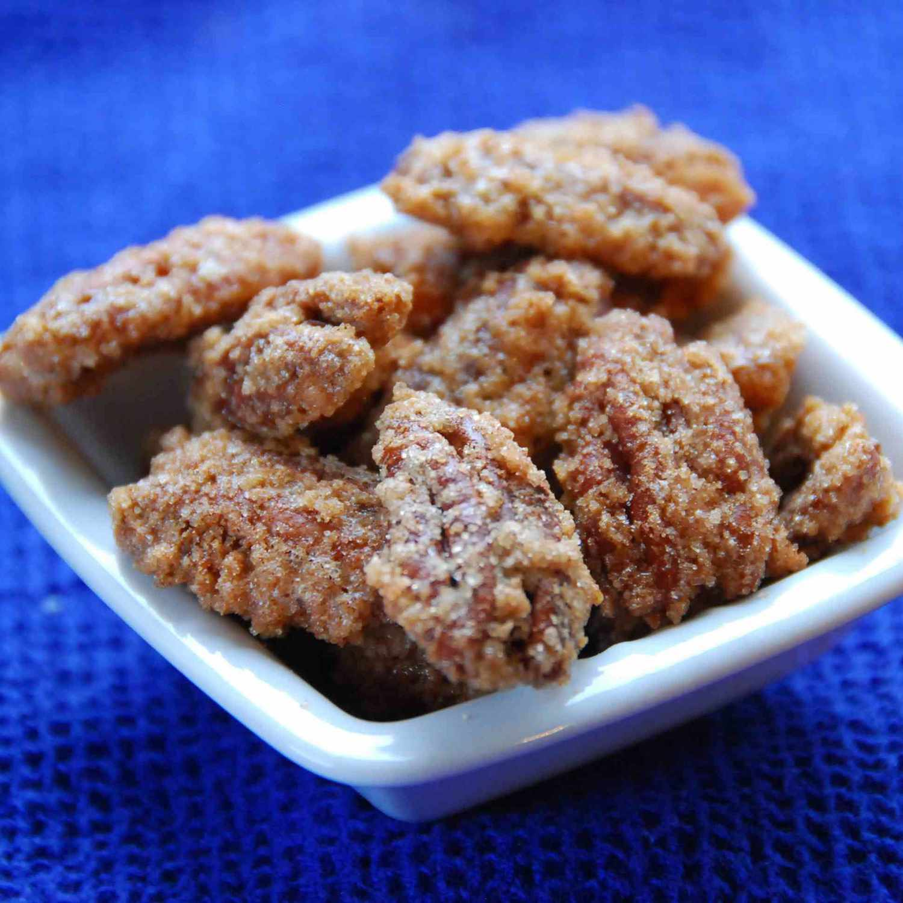

Sugar Coated Pecans

Description
Sugar coated pecans are a great snack for an occasion. If you have
a sweet tooth these are the perfect choice.
Ingredients
- Cooking spray
- Egg white: 1 large egg
- Water: 1 tablespoon
- Sugar: 1 cup; white
- Salt: 3/4 teaspoon
- Cinnamon: 1/2 teaspoon
- Pecans: 1 lb; halves
Steps
- Preheat the oven to 250 degrees F (120 degrees C). Grease a baking sheet with cooking spray.
- Whisk together egg white and water in a medium bowl until frothy. Mix together sugar, salt, and cinnamon in a separate bowl.
- Add pecans to egg white mixture; stir to coat. Transfer pecans to sugar mixture; toss to coat. Spread pecans out on the prepared baking sheet.
- Bake in the preheated oven until crisp, about 1 hour; stir every 15 minutes.